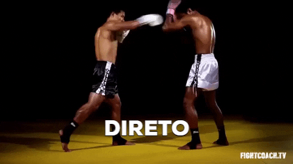

Quais são os principais golpes e defesas do Muay Thai? Neste post você vai encontrar você vai encontrar um compilado das principais técnicas de ataque e defesa da modalidade.
Vale lembrar que o repertório de técnicas do Muay Thai é vasto e o que vamos apresentar aqui são técnicas básicas, mas que compõe toda a base de possíveis variações e que, por isso, são fundamentais para a prática e aperfeiçoamento técnico.
Confira a seguir os principais socos, chutes, cotoveladas e joelhadas do Muay Thai, bem como as formas de defesa que fazem do Muay Thai uma das mais belas formas de combate do mundo.
As técnicas de socos usadas no Muay Thai são as mesmas técnicas utilizadas no Boxe. Sendo assim, são elas:
O soco mais básico do Muay Thai é o jab. Ele é desferido com a mão da frente, é rápido, tem como alvo do rosto do adversário.Embora o principal objetivo do jab seja o controle da distância e não ser o golpe de maior força, pode ter potencial de nocaute, dependendo da força e da técnica do lutador.
O direto é o golpe de mãos mais forte do arsenal do lutador de Muay Thai, pois é desferido com a mão traseira, carregando enorme potência. Assim como o jab, o alvo principal do direto é o rosto do adversário e, se bem conectado, pode levar ao nocaute com facilidade. Outro possível alvo do direto é o torso do oponente, visando fígado.
O soco cruzado tem como alvo a cabeça do oponente, sendo desferido de um ângulo lateral e visando mais precisamente o queixo. É um golpe bastante técnico, pode ser desferido com ambas as mãos (dianteira ou traseira) e possui grande potencial de derrubar o adversário.
O gancho é um golpe desferido de baixo para cima e pode facilmente atravessar as defesas do lutador adversário. Seus alvos são tanto o rosto quanto o abdômen (fígado). Tem potência elevada e pode levar ao nocaute em ambos os casos quando bem encaixado, sendo eficiente principalmente a curtas e médias distâncias
O Muay Thai possuis diversos chutes, falaremos sobre os três chutes mais básicos. São eles:
O chute lateral do Muay Thai é considerado como a técnica de chute mais forte dentre as artes marciais.Extremamente potente, é desferido com a perna traseira e baseia-se na ideia de um machado atravessando lateralmente o oponente, seja para cortar sua perna, seu tronco ou sua cabeça.
Sendo assim, possui três variações de altura: baixo (mirando a perna dianteira), médio (mirando tronco) e alto (mirando a cabeça do oponente).

O chute trocado segue os mesmos princípios o chute lateral, tendo as mesmas variações de altura e é executado com a perna dianteira. É chamado de “trocado” porque, antes de ser desferido, acontece a troca da base do lutador.
Isso acontece porque o chute realizado com a perna dianteira diretamente de sua base não possui potência suficiente para ter efeito. Portanto, nessa troca de base, a perna dianteira passa a ser a perna traseira, possibilitando ao lutador gerar muito mais potência com o giro do quadril.
O chute frontal, também conhecido como teep no Muay Thai, é uma técnica básica que busca criar e controlar a distância, podendo também ser usado para derrubar o adversário.
Pode ser lançado com ambas as pernas (dianteira e traseira), tendo como alvo os quadris, o abdômen, o peito e também o rosto do oponente (nesse último caso podendo ser chamado de chute direto ou frontal direto).
Golpes de cotovelo são bastante característicos do Muay Thai e são usados em curta distância e/ou dentro do clinch. Os principais golpes de cotovelo são:
A cotovelada horizontal ou lateral é um golpe visando o rosto do oponente, cortando horizontalmente, ou seja, traçando um vetor paralelo ao chão. Assim como vários outros golpes, pode ser executado tanto com o cotovelo dianteiro quanto com o traseiro.
A cotovelada ascendente é um golpe executado de baixo para cima (como o soco gancho), traçando uma linha vertical, ou seja, perpendicular ao solo (ao oposto da cotovelada horizontal).Tem como alvo o queixo e rosto, buscando penetrar a guarda do adversário. Também pode ser executado com ambos os cotovelos.
O Muay Thai possui diversas variações da joelhada. Esses golpes podem ter média, curta e longa distância, dependendo da técnica utilizada.
A joelhada mais básica do Muay Thai é a joelhada direta, que pode ser executada com qualquer um dos joelhos, sendo elas a joelhada direta e a joelhada trocada.
Essa joelhada visam atacar diretamente abdômen e plexo solar do oponente.
(11) 94213-9468
matheus.makiyama@sptech.school